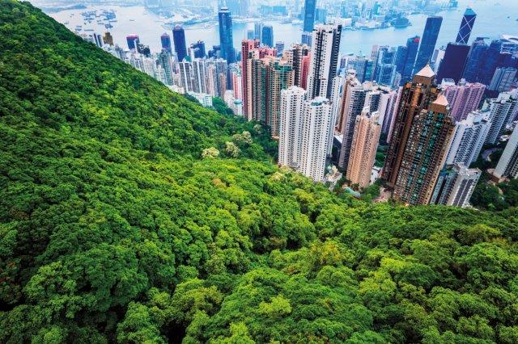
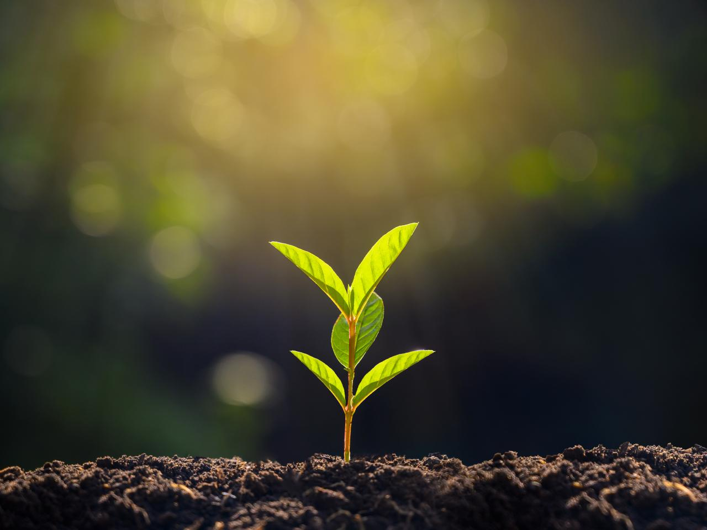

What is Human Ecology?
Human ecology is an interdisciplinary and transdisciplinary study of the relationship between humans and their natural, social, and built environments.

The philosophy and study of human ecology has a diffuse history with advancements in...
Ecology is the study of the relationships among living organisms, including humans, and their physical environment.
Geography is a field of science devoted to the study of the lands, features, inhabitants, and phenomena of Earth.
Sociology is a social science that focuses on society, human social behavior, patterns of social relationships, social interaction, and aspects of culture associated with everyday life.
Psychology is the study of mind and behavior in humans and non-humans. Psychology includes the study of conscious and unconscious phenomena, including feelings and thoughts.
Anthropology is the scientific study of humanity, concerned with human behavior, human biology, cultures, societies, and linguistics, in both the present and past, including past human species.
Zoology is the scientific study of animals. Its studies include the structure, embryology, classification, habits, and distribution of all animals, both living and extinct, and how they interact with their ecosystems.
Epidemiology is the study and analysis of the distribution (who, when, and where), patterns and determinants of health and disease conditions in a defined population.
Public health is "the science and art of preventing disease, prolonging life and promoting health through the organized efforts and informed choices of society, organizations, public and private, communities and individuals"
How Human Ecology is Understood Today
Today there is greater emphasis on the problems facing individuals and how actors deal with them with the consequence that there is much more attention to decision-making at the individual level as people strategize and optimize risk, costs and benefits within specific contexts. Rather than attempting to formulate a cultural ecology or even a specifically "human ecology" model, researchers more often draw on demographic, economic and evolutionary theory as well as upon models derived from field ecology.

Ecosystem Services
The ecosystems of planet Earth are coupled to human environments. Ecosystems regulate the global geophysical cycles of energy, climate, soil nutrients, and water that in turn support and grow natural capital (including the environmental, physiological, cognitive, cultural, and spiritual dimensions of life). Ultimately, every manufactured product in human environments comes from natural systems.
